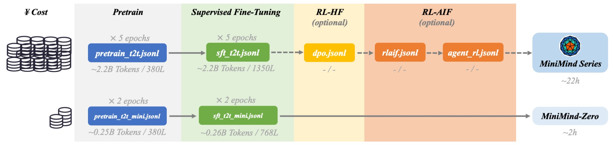

第 02 章 · 基础
分词器与数据流水线
模型看不见文字，只能看见整数。分词器负责把文字切成 token 并映射成 id；数据流水线负责把这些 id 组装成“输入—标签”对喂给模型。
1. 为什么需要分词
如果按字符切，序列太长；如果按词切，词表爆炸且无法处理新词。子词（subword）是折中： 常见片段合成一个 token，罕见词拆成小片段。MiniMind 用的是 BPE，词表只有 6400。
📌 三个关键特殊 token
<|im_start|> / <|im_end|> 标记对话边界；
<think> 包裹思维链；<tool_call> 包裹工具调用。它们不参与“语义压缩”，只做结构标记。
2. 动画：BPE 到底在做什么
BPE 的规则只有一句话：反复把出现次数最多的相邻符号对合并成一个新符号。 下面用经典语料演示。点“合并下一步”，看词表怎么长出来。
动画BPE 合并过程
3. 动画：滑动窗口与下一词预测
预训练任务非常朴素——给一段文本，让模型在每一个位置都预测下一个 token。 输入和标签其实来自同一串 id，只是错开一位。
动画input_ids 与 labels 错位一位
🔑 一句话记住
labels = input_ids[1:]，input = input_ids[:-1]。因果掩码保证位置 t 只能看到 ≤ t 的信息。
4. 数据流水线要组装什么
- PretrainDataset：读 jsonl 里的
text，加 BOS/EOS，补齐到max_length，pad 位置标签设-100（不计损失）。 - SFTDataset：读多轮
conversations，套apply_chat_template，再用generate_labels把只有 assistant 回答的部分标为有效标签。 - DataLoader：把样本打成 batch，交给训练循环。

✅ 动手提示
打开配套 Notebook，先用 tokenizers 手搓一个 mini BPE，再实现 PretrainDataset。
先跑通“文本 → id → 错位标签”这一条最小闭环，再谈模型。